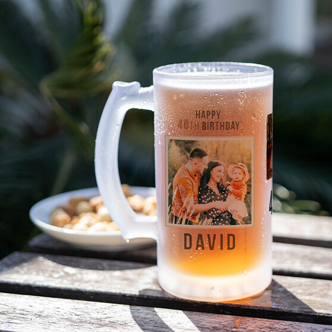
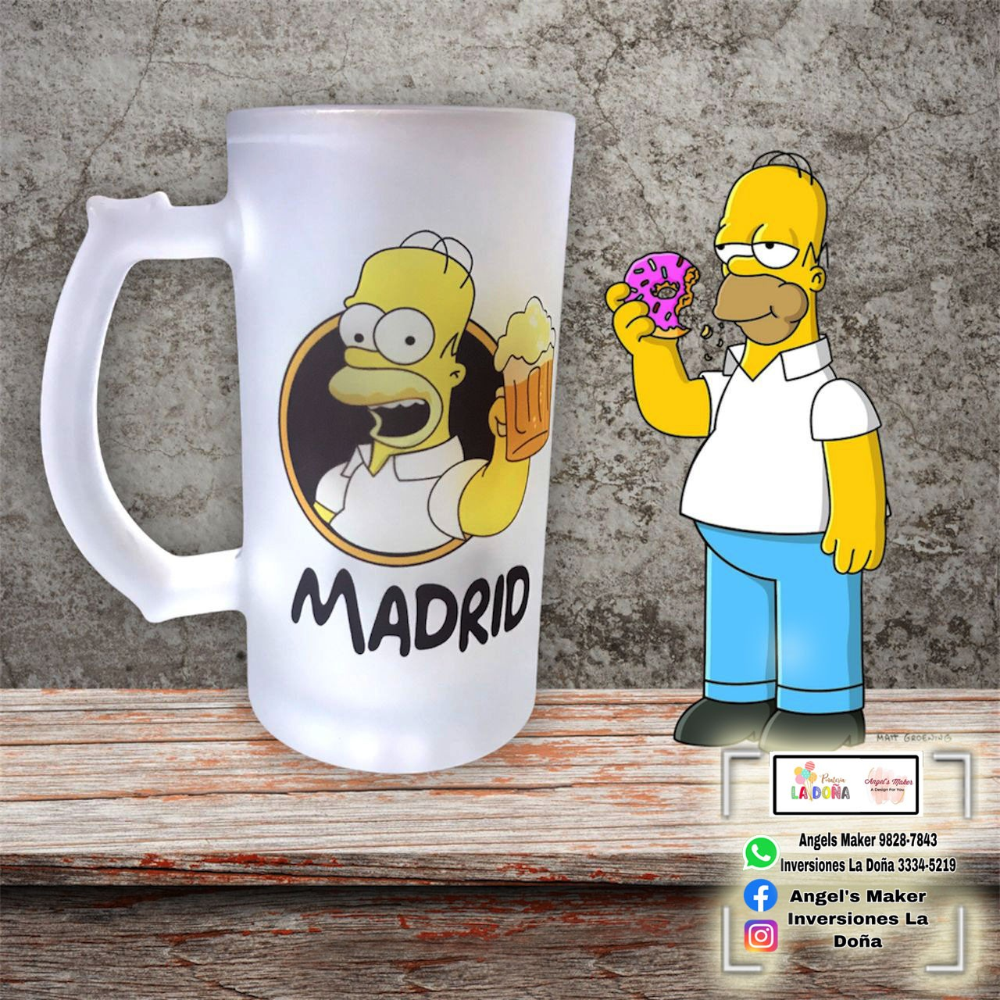
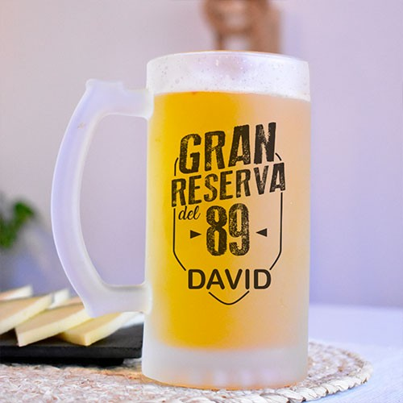
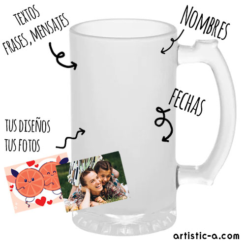
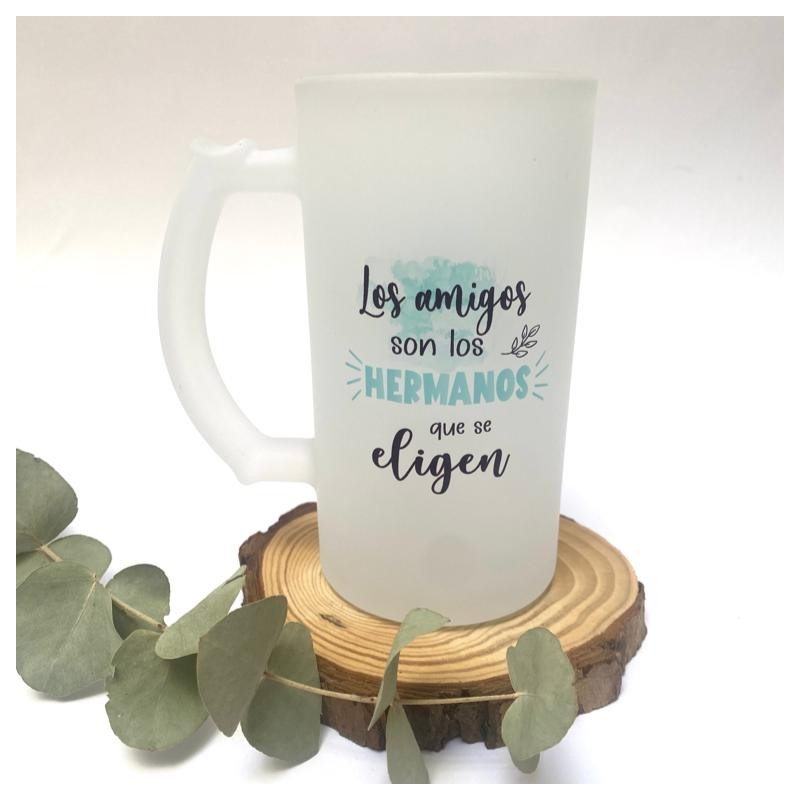

Hidrátate con estilo y personalidad. Nuestras botellas personalizadas combinan
funcionalidad y diseño para que lleves tus bebidas favoritas a donde vayas.
Disponibles en materiales como acero inoxidable, plástico libre de
BPA y vidrio templado, ofrecemos una variedad de tamaños,
colores y estilos para todos los gustos. Ya sea para el gimnasio,
la oficina, la escuela o un regalo especial,
puedes personalizarlas con nombres, frases,
logos o diseños únicos.
¡Una opción ecológica, práctica y totalmente tuya!



Contamos condiferentes tipos de jarras sublimadas:
Jarras de ceramica Blanca
Jarras Magicas
Jarras de Acero Inoxidable
Jarras metalicas de camping
Jarras de vidrio esmerilado
Jarras de color interior
Jarras de polimero
Jarra tipo latte


Contamos con diferentes Materiales de jarras sublimadas: